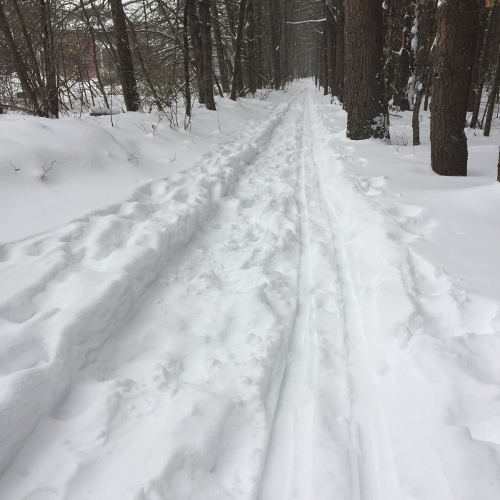
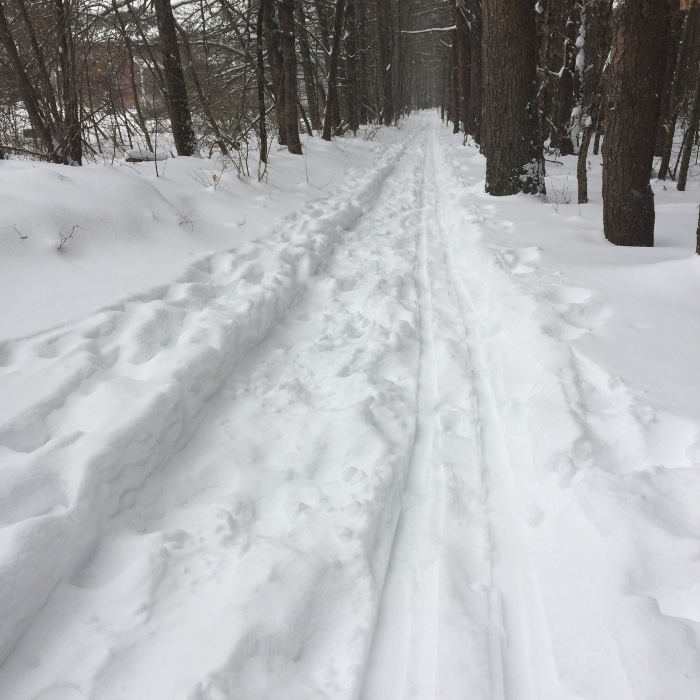

The Groton Town Forest is one of the largest trail networks in Groton. This network of trails is truly diverse and will suit the wishes of anyone. Whether you want to go for a stroll on a welcoming day or tear it up on a mountain bike, this property is for you. There is a scenic route that follows the Nashua River, as well as an alluring trail that follows the old railroad tracks. A walk in the Groton Town Forest is wonderful. As you let your worries and obligations fade away, just enjoy the untouched beauty of nature.
To enjoy The Groton Town Forest kettle holes it is recommended to take The Loop Trail.
The Groton Town Forest is great for mountain biking, it has smooth flowing trails that are suitable for all abilities. Whether it is a network of cart roads or the 8 miles of single track, all routes lead to big smiles. For those looking for a longer route head north to Fitch's Bridge, cross over and head south to return. Parking is at the end of Town Forest Road.
The Groton Town Forest has everything for the Cross Country skier. There are over 15 miles of trails to explore from some white-knuckle schussing, to mostly flat. There are many hills and adventures for those who are brave enough, but there are also easy going flat loops. The central part of the Town Forest is a flat glacier river delta, but it drops off sharply along rivers on the Eastern (Nashua River) and Southern (Squannacook River) borders. There are also a multitude of kettle holes and kettle ponds in the central area that make striking exceptions to the generally flat terrain.
 

New England Mountain Biking Association